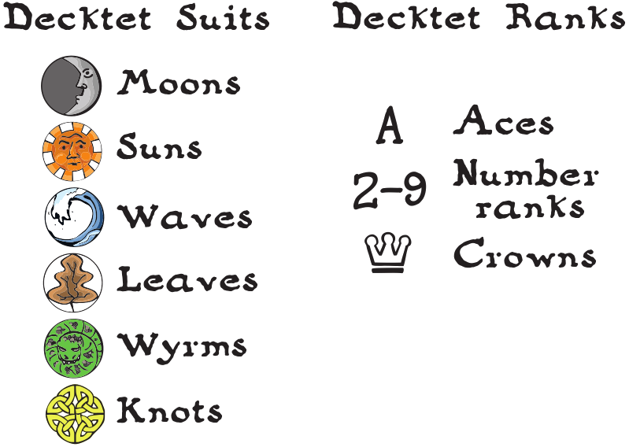

The Decktet
The Decktet is a magical thing from another world, a six-suited deck of cards that can be used to play dozens of different games.
You can learn more about the Decktet and other games at Decktet.com.
The 36 card basic deck is composed of the following suits and ranks:

Jacynth - A territory control Decktet game
Jacynth is among the oldest cities, and a map of its streets is a record of history. It is a haphazard maze of overlapping interests and neighborhoods, with intricate social bonds tying one block to the next. You could control the city if you could control a nexus in that maze of ancient intrigue, but first you would have to find it.
Object of the game: During a game of Jacynth, cards are laid out to form a six-by-six grid that represents the city. Players claim areas by placing influence tokens on cards, aiming to control more of the city than their opponents.
Districts
A district is a group of cards that share a suit symbol and are adjacent to one another. For example, three cards that have Sun suits laid in a row, one next to another, would form a district. The cards in a district need not be in a straight line, but each card must share an edge with another card in the district. Districts do not connect across diagonals or across open spaces that do not have cards in them yet.
A number card (since it has two suits) may be part of two separate districts; one for each suit.
A player controls a district when they have an influence token on a card in that district.
You cannot place an influence token in a district already controlled by an opponent, but it is possible that subsequent card play will connect what had been two separate districts. If this happens, then the player with whose token is on the higher ranked card controls the district. Crowns beat 9s; 2s beat Aces.
If you have more than one token in a district, the card ranks do not add together; only the highest ranked card counts for district control.
Example of control: Aaron has a token on the 8 of Moons and Suns. Beryl has a token on the Crown of Moons. By a chain of Moon cards, the two cards become part of the same district. The Crown is the higher ranked card, so Beryl controls the Moon district. Beryl's token is not on a card Suns card, so Aaron still controls the Sun district that includes the 8.
Game play
Players take turns, starting with the player on the dealer's left.
On your turn, you begin by adding a card to the city. Then you may place an influence token, although you are not required to do so. Finally, draw a card.
Here are the details on all that:
Explore the city. Select a card from your hand and play it face up on the table, adjacent to one of the cards already in play. You must place it within the grid of the city.
Exert influence. If you have influence tokens remaining, you may place one on a card in play.
You may not place an influence token on a card that is part of a district controlled by another player. This restriction applies even if the card has another suit that also makes it part of second district, where only one of the districts in controlled. You may, however, place an influence token on a card that is part of a district you already control. This can be a good idea if the card is part of an uncontrolled second district.
You may not place more than one influence token per turn. You may place influence on the card you added this turn or on another card, even on one of the starting cards.
Draw a card. Drawing a card ends your turn.
After the deck is depleted, play continues until thirty-six cards have been played and the final player's turn is complete.
Scoring
At the end of the game, you score points for each district you control: One point for each card that comprises the district.
There is no bonus or special advantage for having more than one influence token in a district, and no effect from unplaced influence tokens remaining at the end of the hand.
Note that a district may consist of a single card, if that card is not adjacent to any that share a suit with it. A single isolated Ace or Crown would be worth one point to a player who had a token on it. A single isolated number card comprises two single card districts, one for each suit, and would be worth two points.
Credits
The Decktet, the accompanying artwork, and the game Jacynth were created by P.D. Magnus and are offered as open content under a Creative Commons Attribution NonCommercial ShareAlike 4.0 License.
The background texture 'funky lines' was created by Shiva and offered under the CC BY-SA 3.0 license at Subtle Patterns
This adaptation of the Jacynth game was created by Dylan Cairns and is released under the CC BY-SA 4.0 License. The code can be found on Github.
HTML5 Drag and drop mobile polyfill code is Copyright (c) 2016 Bernardo Castilho under an MIT license. Find it on Github.